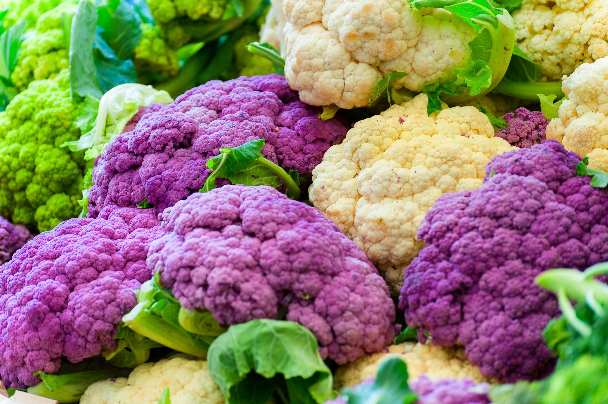
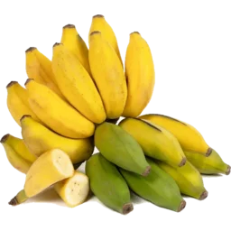
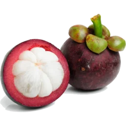
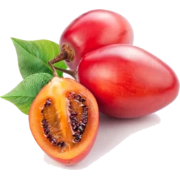

Organic,
as nature intended.
Our organic range is carefully sourced from trusted growers who farm with respect for the land and your wellbeing.
How we source
Rooted in trust
We work closely with organic growers who share our values of
quality, care and respect for the land.
Organic and local produce play a huge part in our shop.
Although we trust and utilise suppliers from far afield,
we do also value organic and local produce.
We have weekly deliveries from a fantastic organic market garden in Kent.
From the farm to our shelves, we take care to source produce
from trusted growers and producers who take pride in what they
do.
We look beyond the label when choosing what to bring into the
shop. We consider how each product is grown, where it comes
from and the care that goes into producing it. By building
relationships with growers and producers we trust, we can
offer organic food that meets the high standards we expect
from everything we sell.
Our selection changes with the seasons, allowing us to bring
in produce when it is naturally at its best. From fresh
organic fruits and vegetables to juices, eggs, butter, dates
and olives, each product is chosen for its quality and
character. We believe that good food starts with good
farming, and that care can be tasted in the finished product.


Why buy organic?
Nourished by nature
Organic produce is better for you and better for the planet. Organic farming restricts the use of synthetic pesticides and fertilisers, meaning organic foods can have lower levels of pesticide residues. Some studies have also found differences in certain nutrients and beneficial plant compounds. Organic farming also supports healthier soils, greater biodiversity and more sustainable growing practices. For us, organic is about choosing food that is grown with care, is wholesome, naturally produced and responsibly sourced.
From beautifully ripe fruits and fresh vegetables to wholesome juices, rich butter, naturally sweet dates, olives and farm-fresh eggs, our organic range is chosen for its quality, flavour and provenance. We believe that good food starts with good farming, and that the way food is grown matters. By supporting organic growers and producers, we help encourage farming methods that work with nature rather than against it, while bringing you food that is full of natural goodness and made to be enjoyed at its best.
Explore our organic produce
Fruits
Our organic fruit selection brings together seasonal favourites and more unusual varieties, chosen for their freshness, flavour and quality. From everyday essentials to something a little more special, the selection changes throughout the year as different fruits naturally come into season. Fruit is naturally rich in vitamins, minerals, fibre and a variety of beneficial plant compounds, making it an important part of a balanced diet. We look for fruit that tastes as good as it looks, selecting produce at its best rather than simply following a fixed list. Choosing organic also means supporting growers who farm without the routine use of synthetic pesticides and fertilisers. For us, it is about more than the finished fruit; it is about encouraging healthier soils, greater biodiversity and farming practices that work with nature.







Vegetables
Our organic vegetables range from everyday kitchen staples to seasonal varieties and more unusual produce that can bring something different to the table. We choose vegetables for their freshness, flavour and condition, with the selection changing throughout the seasons and according to what our growers have at their best. Vegetables are naturally packed with fibre, vitamins, minerals and beneficial plant compounds. Eating a varied selection of vegetables is one of the simplest ways to bring more colour, texture and nutritional variety into your meals, whether they are enjoyed raw, roasted, steamed or used as the foundation of a dish. Organic farming matters because the way vegetables are grown has an impact beyond the crop itself. Organic systems restrict the use of synthetic pesticides and fertilisers and place greater emphasis on healthy soils and biodiversity. We believe that looking after the ground that produces our food is an important part of producing better food.


Juice
Our organic juices are made to capture the natural character of the fruit they come from, with a selection that ranges from familiar favourites to more unusual and refreshing flavours. We look for juices made with good-quality ingredients and a genuine taste of the fruit, rather than products that rely on unnecessary additions. Fruit juices can be a convenient and enjoyable way to incorporate fruit into your day, providing naturally occurring vitamins, minerals and plant compounds. They are best enjoyed as part of a varied diet, alongside plenty of whole fruit and vegetables. Organic matters here too. When the fruit used to make a juice has been grown organically, it has been produced under farming standards that restrict synthetic pesticides and fertilisers. We think that care should extend from the soil, to the fruit, to the finished bottle.

Pantry
Our organic pantry is where you'll find the things that make a kitchen more interesting. From naturally sweet dates and rich olives to butter, eggs, preserves and other carefully selected ingredients, the range brings together everyday essentials and products that are a little harder to find elsewhere. These foods each have their own place in a balanced and enjoyable diet. Whether you're looking for something to spread, cook with, add to a meal or simply enjoy on its own, we look for products with excellent ingredients, distinctive flavour and a clear sense of where they come from. Organic certification matters beyond fresh fruit and vegetables. It supports producers who follow organic farming and production standards, from the way ingredients are grown to the way they are handled. By choosing organic products throughout the pantry, we can support the growers and producers putting care into every stage of what they make.